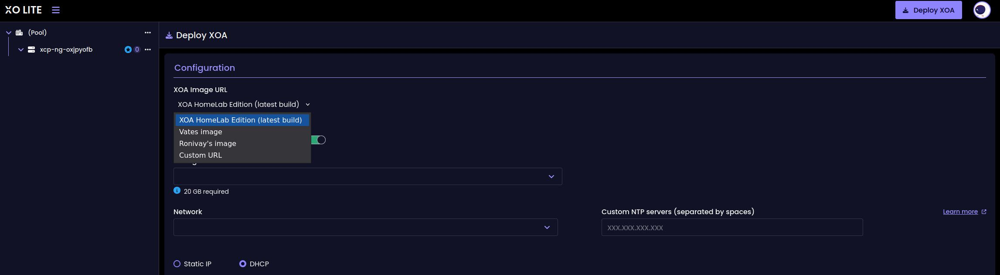
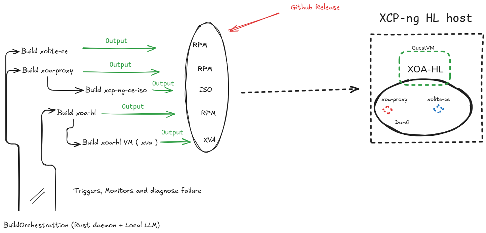

# XCP-ng HL, from one patch to a full build backend
Disclamer: This project was build being assisted by Claude AI mainly and other LLMs. Also, I would like to emphasis I’m taking very great care to read and understand what is being produced since I want to have a robust, stable and secured platform for myself.
With that out of the way, let’s got to the real topic.
Back in April I wrote about [XCP-ng Community Edition](https://vagrantin.github.io/blog/20260401/XCP-ngCommunityEdition.html), a small project to build my own XCP-ng ISO. At the time I described it as intentionally minimal: one fork and one ISO builder repository, no scheduled jobs, no cross-repo dispatches, no GitHub Pages.
Three months later, every part there are now eight repositories, a nightly orchestration daemon, a local LLM that reads my failed CI logs, and a documentation site on GitHub Pages. The project also has a proper name now: **XCP-ng HL** (Home Lab).
This post is the story of how it got there, and the map for a series of more technical posts, one per component.
## 01, Where it started
It was a personal need. I wanted a setup that is stable and gives me all the features that XCP-ng and Xen Orchestra built from source provide, without redoing the manual steps every time I rebuild a host or have to update everything manually.
[Ronivay's XenOrchestraInstallerUpdater](https://github.com/ronivay/XenOrchestraInstallerUpdater) already simplifies the XO-from-source part enormously, and it was a great inspiration. But I wanted to go one step further: install an ISO, open XO Lite, click one button, and get a working self-hosted Xen Orchestra. Nothing to type, nothing to download by hand.
## 02, What it looks like today
The base is stock XCP-ng 8.3, same installer, same hypervisor. The only visible change is the "Deploy XOA" flow in XO Lite. After install you can deploy:
- the **XOA HL image** (default), Xen Orchestra built from source, UI cleaned up
- the **official Vates XOA**
- **Ronivay's prebuilt** image to have a bleeding edge version as it's built from master
- **any image of your own**, from an HTTP or HTTPS URL, `.xva` and `.xva.gz`
Behind the button, a small Rust service called `xoa-proxy` (I have to change this name by the way) streams the image straight to XAPI. If you host the image locally, nothing leaves your network.

I am running it in my own lab today, and the upgrade from the official XCP-ng 8.3 to it went through without trouble.
## 03, How it grew
**April.** Two repositories: `xolite-ce` (the XO Lite patch and RPM build) and `xcp-ng-ce-iso` (the ISO assembly). The first approach patched compiled JS with `sed`. That died quickly, Vite's content-hashed filenames change on every upstream build, so the patch moved to the TypeScript source, applied before the RPM is built.
**May.** The custom deploy needs HTTPS and gzip support, and XAPI wants to pull the image from a URL. So I wrote `xoa-proxy`, a small Rust HTTP/HTTPS server that runs on the host and streams `.xva` and `.xva.gz` to XAPI's `VM.import`. The first public alpha ISO shipped the same month, GPG-signed with an offline master key and dedicated signing subkeys.
**June.** The bigger piece: **XOA-HL**, a Xen Orchestra appliance built from source with a cleanup of the UI, the menus for features that require a license are hidden, so you only see what you can actually use. That's two more repositories: `xoa-hl` (patches, RPM and container build) and `build-xoa-hl` (a Packer pipeline that produces the XVA image on a XCP-ng host). The docs site went up, and the `v8.3-ce9` ISO was released.
**June, also.** With six repositories, keeping the builds fresh by hand stopped being fun. `buildorchestration` is a Rust daemon that triggers all the GitHub Actions workflows on a daily timer, skips components whose latest release is already up to date, and when a build fails, feeds the logs to a local LLM (Ollama) and gives me a diagnosis on a small dashboard.
**July.** Reality check month. Upstream xo-lite 0.23.0 broke my build, which led to pinning the upstream version explicitly in an `UPSTREAM_TAG` file, the build now only moves when I decide it moves. The patching logic also grew up and moved into its own tool, `xoa-deploy-patcher`.
## 04, The HighLevel infrastructure

Eight repositories in total, if you count `xcp-hl` (the documentation) and `xoa-deploy-patcher`. Each one is small and does one thing.
## 05, The series
The next posts will each take one component apart:
1. Patching XO Lite without forking it (`xolite-ce`, `xoa-deploy-patcher`)
2. `xoa-proxy`, a small Rust service in Dom0
3. Rebuilding the XCP-ng ISO (`xcp-ng-ce-iso`)
4. XOA-HL, building Xen Orchestra from source into an appliance
5. GPG signing for a community distro
6. `buildorchestration`, a Rust daemon and a local LLM analyzing errors
## Links
- Docs: https://vagrantin.github.io/xcp-hl/
- Latest ISO: https://github.com/Vagrantin/xcp-ng-ce-iso/releases/latest
- Project home: https://github.com/Vagrantin/xcp-hl
This project only exists thanks to the work of Vates and the XCP-ng / Xen Orchestra community, everything here builds on their upstream work.
If you try it and something breaks, tell me. That's how it gets better!